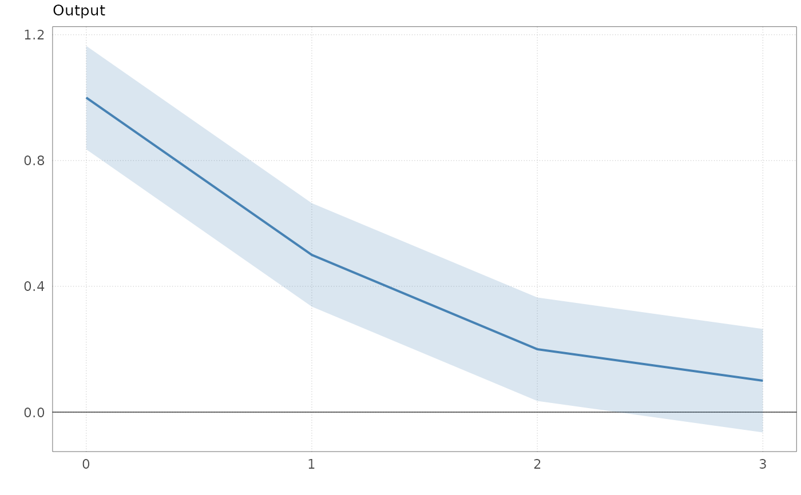
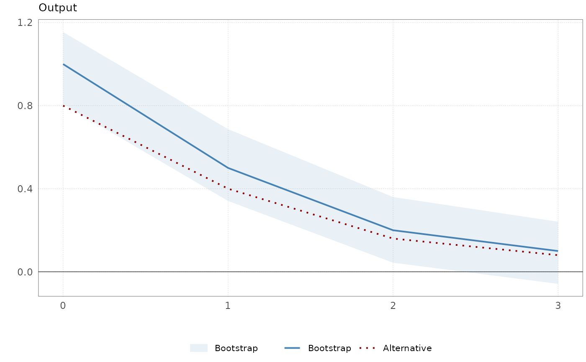

Produces a panel of IRF plots, one per variable-shock combination, for up
to three sets of impulse responses drawn in the same panels. Returns a list
of ggplot objects that can be arranged with arrangeirf() (or e.g.
cowplot::plot_grid()).
Arguments
- IRF
Impulse responses to plot. One of
a numeric array (H x N x E, or H x N for a single shock) of point estimates, with numeric horizon labels in
dimnames()[[1]];an estimator result as returned by
hetiv(),proxyiv(),recols()orsvariv(), i.e. a list with elementsirfand optionallyse,boot(array H x N x E x B of bootstrap draws) andMethod;an (unnamed) list of up to three such objects, which are overlaid in the same panels.
- IRFse
Array of standard errors with the same dimensions as
IRF, orNULL. Only used whenIRFis a numeric array (kept for backward compatibility). For list inputs, supply the standard errors as elementseof each list.- HTick
Integer. Step size for x-axis tick marks.
- Labels
Character vector of length N. Variable names used as panel titles.
- ci
Numeric vector of one or two confidence levels in (0, 1). One shaded band is drawn per level, with wider bands rendered at lower opacity. Defaults to
0.90(a single 90% band); supply two levels, e.g.c(0.90, 0.95), to draw two bands.- names
Character vector with one name per set of impulse responses, used in the legend. Defaults to the
Methodelement of each result if available and to"IRF 1","IRF 2", ... otherwise.- colors
Character vector of colours, one per set of impulse responses. Defaults to
c("steelblue", "darkred", "darkgreen").- boot_type
Character. How bootstrap draws are turned into bands:
"recentred"(default) or"percentile". See Details. Ignored when no bootstrap draws are supplied.- legend
Logical. If
TRUE, a legend withnamesis added to each panel when more than one set of impulse responses is plotted. DefaultFALSE.
Value
A list of ggplot objects, one per variable-shock combination,
ordered by shock (outer loop) then variable (inner loop).
Details
Each set of impulse responses is plotted in one of three ways, depending on what is supplied:
Point estimate only: a line without confidence bands.
Point estimate with standard errors: shaded normal bands
irf +/- qnorm((1 + ci) / 2) * sefor up to two confidence levels.Point estimate with bootstrap draws: shaded percentile bands for up to two confidence levels. With
boot_type = "recentred"(the default) the quantiles are computed from the deviations of the draws from their bootstrap mean and added to the point estimate, so the (possibly asymmetric) band is centred on the reported point estimate. Withboot_type = "percentile"the raw quantiles of the draws are used; such bands can be off-centre when the bootstrap distribution is biased relative to the point estimate.
Bootstrap draws take precedence over standard errors if both are present
(as for svariv() with nboot > 0). Standard errors that are all zero
suppress the bands.
Examples
irf <- array(c(1, 0.5, 0.2, 0.1), dim = c(4, 1, 1))
dimnames(irf)[[1]] <- 0:3
se <- array(0.1, dim = dim(irf), dimnames = dimnames(irf))
# One IRF with normal bands at two confidence levels
plotirf(irf, se, HTick = 1, Labels = "Output")
#> [[1]]

#>
# Two IRFs: the second without bands, the first with bootstrap draws
set.seed(1)
boot <- array(irf, dim = c(dim(irf), 200)) + rnorm(4 * 200, sd = 0.1)
plotirf(
list(list(irf = irf, boot = boot), list(irf = irf * 0.8)),
HTick = 1, Labels = "Output", ci = 0.90,
names = c("Bootstrap", "Alternative"), legend = TRUE
)
#> [[1]]

#>